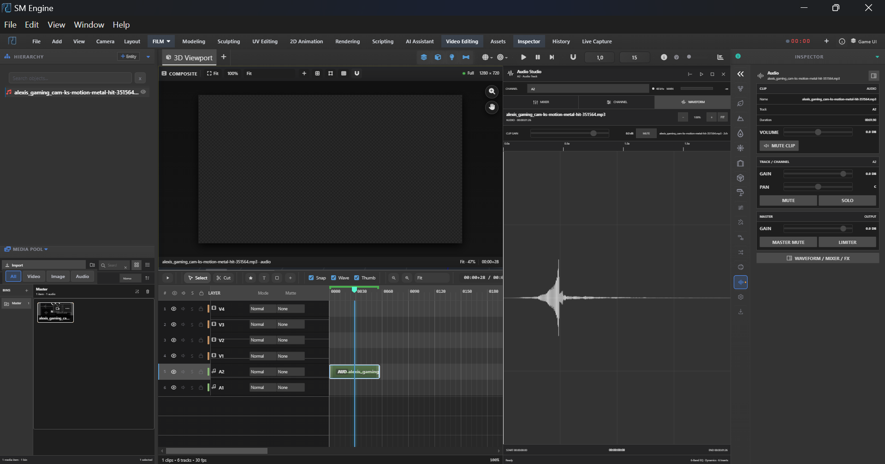
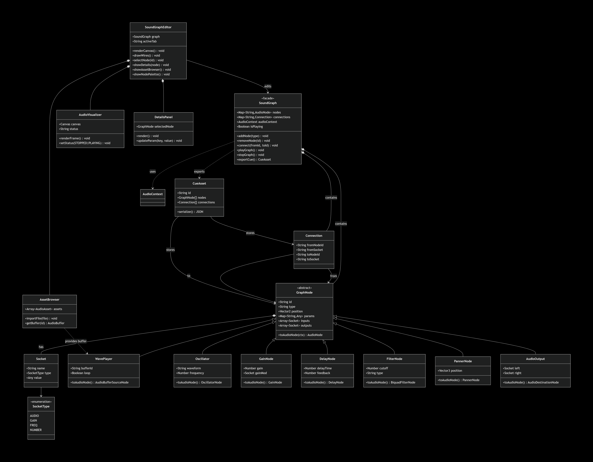
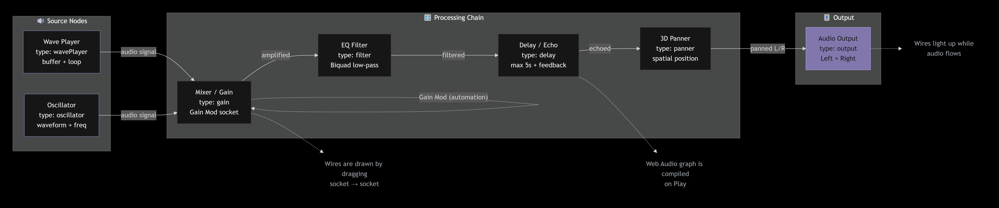
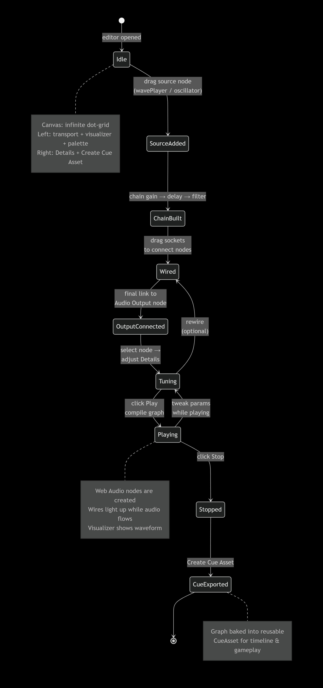

MetaSound Audio Editor
The MetaSound Engine 2.0 is a visual, node-based procedural audio editor built on the Web Audio API. Compose synthesized sound effects, loops and cues by connecting oscillators, players, filters and effects in a canvas graph, then export the result as a reusable cue asset for the timeline and gameplay.
Opening the editor — open the Node Editor panel and switch to the
MetaSound tab (the
sound-graph-wrapper sub-editor). A
Play / Stop toolbar compiles and runs the current graph in real time,
with a live waveform visualizer at the top of the sidebar.
Editor Layout


SoundGraph facade composes GraphNode subclasses
(wavePlayer, oscillator, gain, delay,
filter, panner, output), wires them via
Connection objects, and exposes playGraph() /
stopGraph() / exportCue(). The editor composes the
AudioVisualizer, DetailsPanel and AssetBrowser.
Click to enlarge.
- Left sidebar — transport (Play/Stop), live
#audio-visualizercanvas with STOPPED/PLAYING status, Asset Browser (import audio files via#sound-file-upload, stored as buffer assets) and the Node Palette. - Canvas — infinite dot-grid workspace; drag nodes, drag sockets to draw SVG connection wires, right-click a node for Delete.
- Right sidebar — Details property panel for the selected node (frequency, waveform, gain, delay time…), plus Create Cue Asset to bake the graph into an exportable cue.
- Audio Output — a fixed output node with Left/Right input sockets. Every signal chain ends here.
Node Palette
| Node | Type ID | What it does |
|---|---|---|
| Wave Player | wavePlayer | Plays an imported audio asset (buffer source); optional loop. |
| Synthesizer (Osc) | oscillator | Procedural tone — waveform (sine/square/sawtooth/triangle) and frequency (default 440 Hz). |
| Mixer / Gain | gain | Volume control with a Gain Mod input socket for automation. |
| Delay / Echo | delay | Feedback delay line (max 5 s) for echo and space. |
| EQ Filter | filter | Biquad low-pass filter (cutoff frequency). |
| 3D Panner | panner | Spatial panning for 3D-positioned sound. |
| Audio Output | output | Fixed master node with Left/Right sockets. |

wavePlayer / oscillator) are chained through
processing nodes (gain → filter → delay →
panner) before reaching the master output. The
Gain Mod socket enables automation. Click to enlarge.
Workflow
- Drag a source node (Wave Player or Oscillator) onto the canvas.
- Optionally chain Gain → Delay → Filter nodes to shape the sound.
- Click a node's output socket and drag to the next node's input socket to wire the chain; finish at the Audio Output node.
- Select any node to tweak parameters in the Details panel.
- Hit Play — the graph compiles into live Web Audio nodes; wires light up while audio flows.
- Hit Stop, then Create Cue Asset to save the graph as a cue for timeline/gameplay use.

Scripting Reference
window.SoundGraph.addNode("oscillator"); // synth / wavePlayer / gain / delay / filter / panner
window.SoundGraph.playGraph(); // compile + play the whole graph
window.SoundGraph.stopGraph(); // halt all sources, clear active wiring
window.SoundGraph.exportCue(); // bake graph into a cue asset
Related systems — the classic
AudioStudio editor
(engine\soundes\sond.js) handles one-shot sound effects and positional audio, and timeline audio
tracks live in js\timeline\core\timeline-events-audio.js. See
Audio & MetaSound for the full sound pipeline.